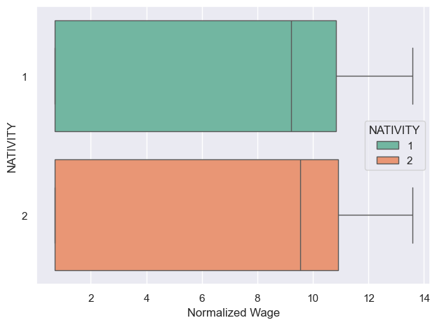

Exploratory Data Analysis (EDA) is an important step to see the general trends or to get an insight of the dataset. Visulization will provide an evidence of possible patterns or outlilers that need to be dealt with. US Census, World Bank, and OECE data will be used to see the differences between immigrants and native-borns. USCIS and MPI data will be visulized as a word cloud to see the frequency of words used.
General Trends
Data Preparation
# Import librariesimport pandas as pdimport seaborn as snsimport matplotlib.pyplot as pltimport numpy as npimport warningssns.set_theme(palette="Set2")warnings.filterwarnings("ignore")# Read datawage = pd.read_csv("./data/wage_cleaned.csv")employment = pd.read_csv("./data/employment_cleaned.csv")education = pd.read_csv("./data/education_cleaned.csv")acs = pd.read_csv("./data/acs_cleaned.csv")# Set necessary categorical variablesacs['NATIVITY'] = acs['NATIVITY'].astype('category')acs['POBP'] = acs['POBP'].astype('category')acs['DECADE'] = acs['DECADE'].astype('category')acs['ENG'] = acs['ENG'].astype('category')acs['MAR'] = acs['MAR'].astype('category')acs['RAC1P'] = acs['RAC1P'].astype('category')acs['SEX'] = acs['SEX'].astype('category')acs['ESR'] = acs['ESR'].astype('category')acs['SCHL'] = acs['SCHL'].astype('category')acs['SUCCESS'] = acs['SUCCESS'].astype('category')
English Proficiency
More than 90% of native-borns speaks only English(0). Among immigrants, only 40% responded that they speak English very well(1).
Racial Category
On racial categories, “White alone” (1) was the majority among native-borns, yet “Asian alone”(6) is the majority followed by “White alone”(1) and “Two or More Races”(9) among immigrants.
Education Attainment
In terms of education attainment, there are more people who got Bachelor’s degree(21) in immigrants than native-borns. This is opposite on “Regular high school diploma”(16).
Marital Status
When it comes to marital status and employment status, both immigrants and native-borns have similar distribution. However, there are slightly more percentage of “Never married”(5) people on native-borns, having “Mariied”(1) as the highest for native-borns and immigrants.
Employmeny Status
Lastly, 50% of both native-borns and immigrants are “Civilian employed, at work”(1) followed by “Not in Labor Force”(6).
As the plot shows, the wage column has many extreme values. Log normalization is used here to make more general by scaling the data into narrower range.
Code
acs.loc[acs['WAGP'] ==0, 'WAGP'] =2acs["NORM_WAGP"] = np.log(acs["WAGP"])print("The median wage difference between native-borns and immigrants is",np.exp(acs[acs["NATIVITY"]==2]["NORM_WAGP"].median())-np.exp(acs[acs["NATIVITY"]==1]["NORM_WAGP"].median()),"in US dollars.")sns.boxplot(x="NORM_WAGP",y="NATIVITY",hue="NATIVITY",data=acs)plt.xlabel("Normalized Wage")plt.tight_layout()plt.show()
The median wage difference between native-borns and immigrants is 4100.0 in US dollars.

Now we can see the difference on median wage between native-borns and immigrants is clearer than before. However there is no large difference.
Sex
Being a female(2) doesn’t impact on wage on both native-borns and immigrants, but being a male(1) leads to higher wage on immigrants.
Racial Category
“White alone”(1), “Asian alone”(6), and “Two or More Races”(9) native-borns earn more wage than those of immigrants. For immigrants, “Alaska Native alone”(4) group has very high wage than any other combinations followed by “Black or African American alone”(2).
English Proficiency
Immigrants are making more money if they can speak English well enough(0-2). However, if they don’t speak well(3-4), native-borns are making more money.
Education Attainment
On almost every category of education attainment, immigrants earns more wage than native-borns. There are couple things to note. First, there is a quite high wage on people who only finished “Nursery school, preschool”(2). Second, “Bachelor’s degree”(21) and “Associate’s degree”(20) are the only locations where native-borns can compete with immigrants regarding their wage.
Marital Status
Similar to education attainment, immigrants have higher wage in all possible marital status. Being “Widowed”(2) has a significant disadvantage in wage and being “Never married”(5) has a significant advantage in wage.
Employment Status
There is no huge difference in wage between native-borns and immigrants based on their employment status. Employed in “Armed Forces”(4,5) has a high wage value followed by “Civilian employed, at work”(1).
Country Comparison
Since each immigrant comes from different place, the comparison with origin countries brings different perspectives of the success. In this section, we are looking at four different countries, Mexico, Colombia, Canada, and Korea, on their nationa average of wage, education attainment, and employment rate.
Red lines represent national averages on each countries. Both native-borns and immigrants from all those four countries have less median wage than their origin residents. As addressed in the prior research in introduction, immigrants from Korea and Canada, relatively more developed countries than Mexico and Colombia, have less median wage than native-borns and even people from Colombia and Mexico.
Korea and Canada has similar trends in education attainment. Immigrants from both countries has higher percentage of getting upper tertiary education than below tertiary education. This trend is same for their national average. Yet, immigrants have higher average of upper tertiary education than their national average. On the other hand, Mexican and Colombian immigrants have higher education attainment than their national resident in both below and upper tertiary education.
In terms of employment rate, immigration provides more employments to people from Korea and Colombia, especially all Korean immigrants are employed. Mexican immigrants have about same employment rate as Mexicana nationals. Then Canadian immigrants are less employed than Canadian nationals.
N-400 Word Cloud
Code
from wordcloud import WordCloud, STOPWORDSfrom collections import Counterwords_to_remove = ["information","use","give","state","provide"]# Update the stopwords with the additional words to be removedstopwords =set(STOPWORDS)stopwords.update(words_to_remove)txt =open("data/cleaned_n_400.txt",'r').readlines()[0]wordcloud = WordCloud( width =3000, height =2000, random_state=1, background_color='salmon', colormap='Pastel1', collocations=False, stopwords = stopwords).generate(txt)plt.figure(figsize=(30, 20))plt.imshow(wordcloud) plt.axis("off")plt.show()print("Top 20 most used words")words = txt.split()word_count = Counter(words)for word inlist(word_count):if word in words_to_remove:del word_count[word]word_count.most_common(20)
Form the world cloud, words like “address”, “spouse”, “child”, “citizen”, “birth” are common words that related to the indicators. This might indicates that marital status would be a good indicator deciding the success of immigrants.
MPI Word Cloud
Code
from wordcloud import WordCloud, STOPWORDSmpi = pd.read_csv("./data/MPI_cleaned.csv")txts =" ".join(list(mpi["text"]))words_to_remove = ["immigrant","bear","percent","mexican","canadian","korean","canadians","united","states","approximately","figure","rate","colombian","mexicans"]# Update the stopwords with the additional words to be removedstopwords =set(STOPWORDS)stopwords.update(words_to_remove)wordcloud = WordCloud( width =3000, height =2000, random_state=1, background_color='salmon', colormap='Pastel1', collocations=False, stopwords = stopwords).generate(txts)plt.figure(figsize=(30, 20))plt.imshow(wordcloud) plt.axis("off")plt.show()print("Top 20 most used words")words = txts.split()word_count = Counter(words)for word inlist(word_count):if word in words_to_remove:del word_count[word]word_count.most_common(20)